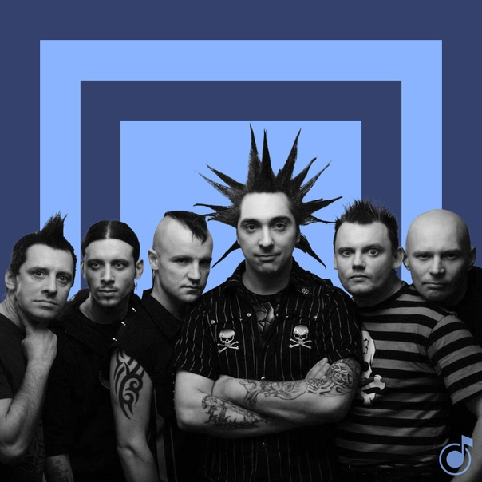

| Главная Состав группы Альбомы |
|

(Нажмите на участника группы на картине, чтобв узнать о нём больше) В составе группы «Король и Шут» постоянно случались рокировки. Приходили и уходили гитаристы и бас гитаристы Балу Балунов, Яков Яша Цвиркунов, Александр Ренегат Леонтьев, Сергей Захар Захаров, Дмитрий Рябчик Рябченко. С 1997 по 2014 год работал сначала звуковиком, а потом клавишником Павел Сажинов. |